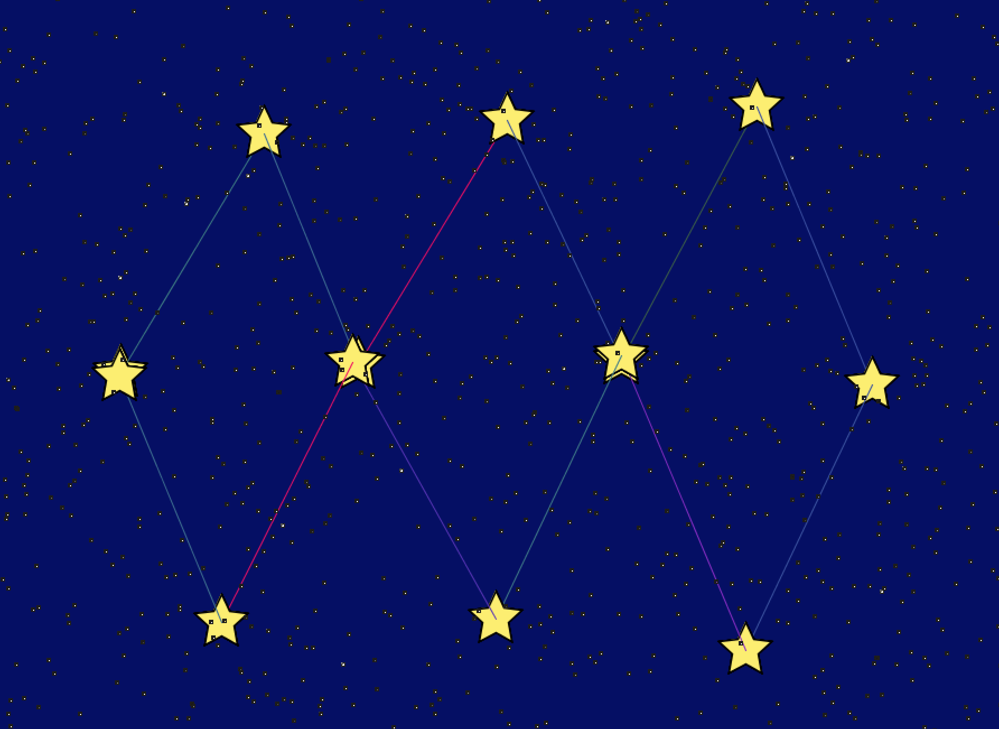

A re-creation of Pieter Spronck's strategy game in which a player's end goal is to collect enough money to buy a moon. Working with an agile development team in our Objects and Design class, my primary role was to create UML class and sequence diagrams, write some unit tests and user stories, implement some of the game functionality, and design UI prototypes. Check out an initial prototype of the game below!
A game consisting of multiple players in which one player arranges obstacles with mirrors and blocks for the second player to figure out how to reach the target with one or more lasers. Working with a group and taking on the role of Craft Engineer for this project, I contributed to designing and implementing the game menu and some of the game functionality. Check out the game demo in the video below!
A drawing tool that allows users to place stars in the night sky and create their own constellations. This program utilizes an audio library so the connecting lines and background stars change color depending on the volume in the room.
Milk and Gech is a TwitterBot I made that tweets posts from the Overheard at GT Facebook Group in a form that resembles poetry. The idea for this bot came from the book Milk and Vines, which is a parody of Rupi Kaur's Milk and Honey. For an additional humorous effect, this bot tweets memes with nouns replaced with Georgia Tech-related words. Scroll through the bot's timeline below!
Tweets by milkandgechIn learning how to create CSS art, I created my own personalized Mondrian painting purely with HTML and CSS following a tutorial from Coder Projects. The tutorial demonstrated how to get started and allowed me the opportunity to solve how to finish the pattern and customize each box with colors of my choice.
See the Pen Mondrian by Fernanda Moreno (@fernanda-moreno) on CodePen.
At the Girls Who Code Summer Immersion Program (Miami, FL, 2016), my team and I created a website aimed at helping students succeed throughout high school and find scholarships and internships. In addition to contributing to the website's design and purpose, my primary role was to write code and content for the Surviving High School page of the site. Feel free to check out the website by clicking on the image below!
Copyright © 2019 Fernanda Moreno. All rights reserved.